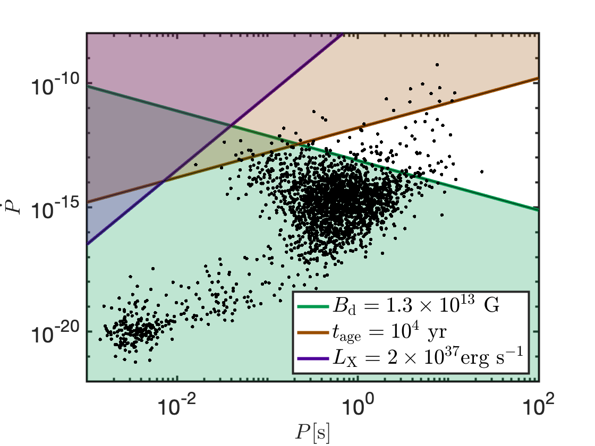
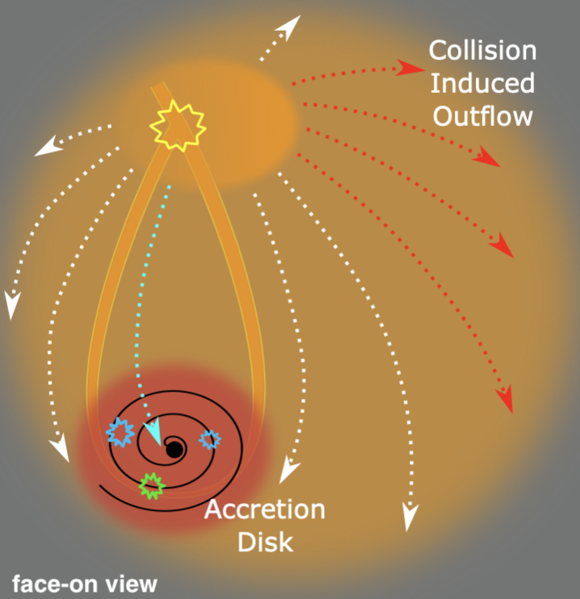
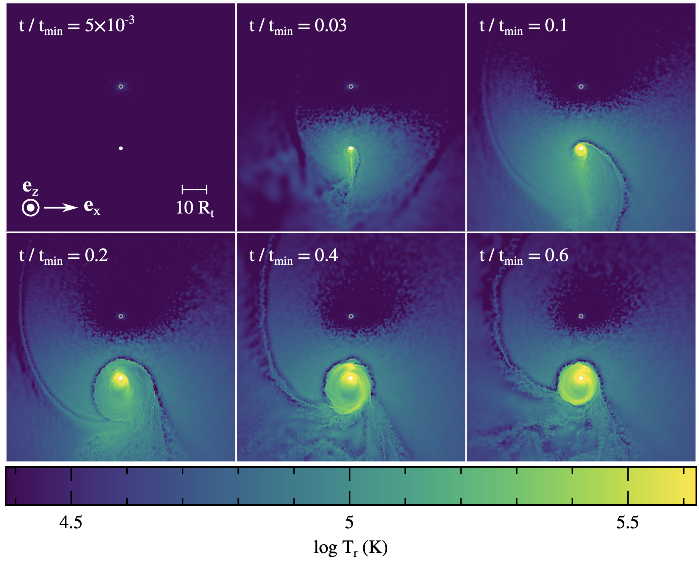
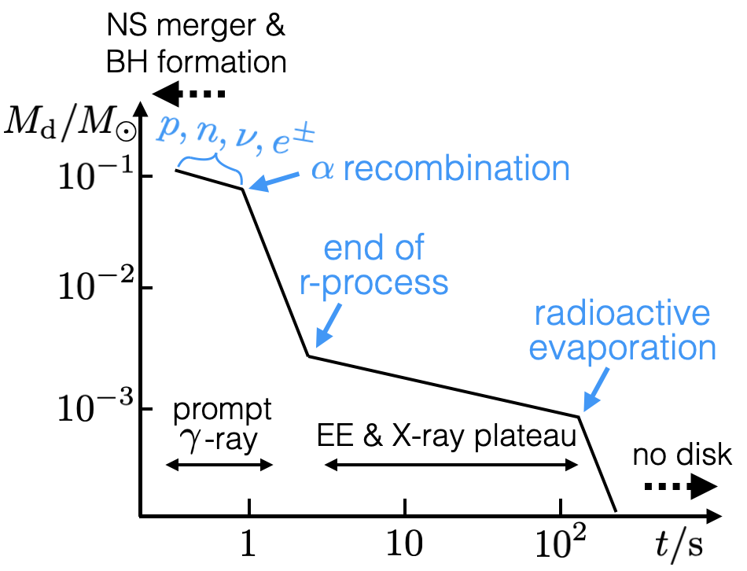
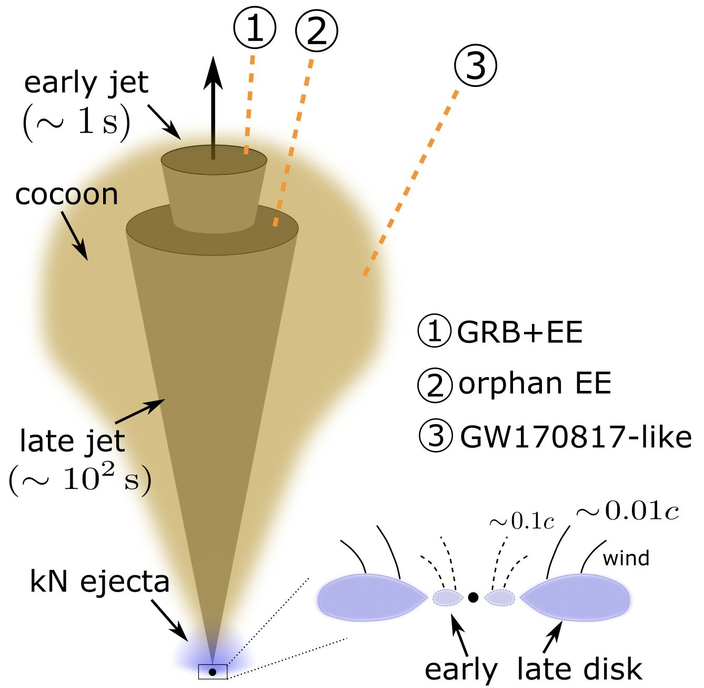

Research
A selection of my works are described below. A full list of my publications is here.
Fast Radio Bursts
- Emission Mechanism
In
Lu, Kumar & Zhang (2020),
we propose that FRBs are generated by Alfven waves
propagating in the neutron star (NS) magnetosphere to large distances where they
become charge starved, and charge clumps are accelerated by an electric field
and coherently generate curvature emission in the radio band.
The figure to the right shows Alfven waves launched from the magnetic
foot points propagate along the
field lines to distances much larger than the NS radius where the charge
density is too low to sustain the current associated with the wave.
As a result of charge starvation, a strong electric field component
parallel to the background B-field develops, and charge clumps are
accelerated to high Lorentz factors and coherently produce curvature
emission in the radio band. The FRB emission is beamed into
the solid angle spanned by the orange arrow. The Alfven waves launched far
from the poles are trapped by field lines that do not extend to
sufficiently large distances,
and a pair fireball is formed which emits hard X-rays visible from a large fraction
of the sky. This model provides a unified picture for faint bursts like FRB 200428
(Bochenek et al. 2020,
CHIME Collaboration 2020)
as well as the bright bursts seen at cosmological distances.
- Source Objects

In
Lu, Beniamini & Kumar (2022),
we propose that the FRB source in a globular cluster of M81
(Kirsten et al. 2022) is
a NS with strong B-fields > 10^13 G (likely at the level of magnetars).
The figure to the right shows the joint constraints on the P (spin period) and Pdot (period derivative)
of the M81-FRB source object, based on (i) the non-detection of X-rays by Chandra,
(ii) the age limit (> 10^4 yr, from the event rate), and (iii) the requirement of a magnetic energy reservoir.
The white region is allowed by observations --- the source object is magnetar-like, but somewhat older than
Galactic magnetars with an age of ~10^5 yrs. It is still unknown how the old (~10 Gyr) stellar population in the
globular cluster can produce such a magnetar-like object. A likely channel is the merger of two massive (~1 Msun)
white dwarfs, which did not generate a type-Ia supernova but the merger remnant collapses into
a strongly magnetized NS.
- Polarization

In
Lu, Kumar & Narayan (2019), we study the propagation of FRB waves
through the magnetosphere of a strongly magnetized NS. It is shown that
the observed electric (polarization) vector is determined by the B-field
orientation at the polarization-limiting radius located far from the NS
surface where the dipolar field dominates (as shown in the right figure),
independent of magnetic configuration of the emission region which is much
closer by. This is because, as the waves propagate in an inhomogeneous plasma,
the electric vector undergoes adiabatic walking, which keeps its X-mode eigenmode nature
--- the E-field stays perpendicular to the k-B plane (k and B are the wavevector
and background B-field).
Therefore, the polarization angles of repeating bursts should be
periodic as modulated by the NS spin, even if the burst
occurrence may not be periodic. Such a periodicity should show up once
we have a sufficient number of bright bursts from a given repeater.
Tidal Disruption Events

Main-sequence stars are shredded by tidal forces when they get sufficiently close
to a supermassive black hole (BH). After disruption, the star is stretched into
a long thin stream (of aspect ratio ~1000) in highly eccentric orbits (1-e ~ 0.01)
which undergo general relativistic precession. Such precession causes the stream to
self-intersect. Then, the shocked gas expanding from the intersection point will
eventually form an accretion disk, which powers multi-wavelength emission. A few
dozen of these tidal disruption event (TDE) candidates have been found in recent
surveys designed to find variable sources in the optical/UV and soft X-rays.
Global numerical simulation of the hydrodynamic evolution of the thin fallback
stream is prohibitively expensive.
In
Lu & Bonnerot (2020), we made a key
simplification of the problem by first calculating the location where the
stream self-intersects according to general relativistic geodesic motion and
then performing hydrodynamic simulations of the stream collision process in a
local region near the intersection point. We found that the self-crossing shock
redistributes energy and angular momentum of the gas in the fall-back stream.
For sufficiently deeply penetrating orbits (pericenter radius Rp <~ 15Rg), the shocks at the
intersection are able to unbind a large fraction (up to 50%) of the fallback gas.
We call the unbound gas the “collision-induced outflow” or CIO. We found that the CIO
covers a large fraction of the sky viewed from the BH and is able to reprocess the hard
(EUV/soft X-ray) photons from the disk into the optical band. This provides an
explanation of the bright optical emission seen in many TDEs. Viewing angle effects
then cause the X-ray luminosity to vary by orders of magnitude from one event to another.
A schematic picture of the stream-collision process is show to the right.

In
Bonnerot, Lu & Hopkins (2021), we conduct the first radiation hydrodynamics
simulation of a realistic TDE (a 0.5Msun main-sequence star disrupted by a 2.5x10^6 Msun BH),
using the code GIZMO.
The multi-panel figure to the right shows the time evolution of the radiation
temperature defined based on the local radiation energy density (U_rad = a T_r^4)
inside the equatorial plane. The time unit is t_{min} = 40d --- the minimum period
of the bound stellar debris. In the t=0 panel (and all others), the BH is represented by a
white circle in the lower half of the figure, and the circle above that is the position of the self-crossing
shock where we inject gas into the computational domain. We found rapid formation of an
accretion disk after the onset of stream self-crossing. Moreover, the region near the
self-crossing point has very little
radiation as a result of strong shielding, so the gas there can maintain a low
ionization fraction and hence high opacity --- this provides the necessary ingredients
for reprocessing of EUV/X-ray photons into the optical band.
Formation of GW190814 (most likely a BBH merger)

The LIGO-Virgo Collaboration recently reported a puzzling event, GW190814,
with component masses of 23 and 2.6 Msun --- a surprising mass ratio of q ~ 0.1. In
Lu, Beniamini & Bonnerot (2021),
we propose a 2nd-generation merger scenario where the 2.6Msun object
was from a previous binary neutron star (BNS) coalescence and the remnant
was able to merge again with the 23 Msun BH tertiary. This occurs when the
remnant (most likely a low-mass BH) receives a kick of about 100 km/s in the
direction of the "loss cone" shaped like a flying saucer, as shown in the figure
to the right. This model was motivated by the relatively small rate (1 to 23 per Gpc^3
per yr) inferred from GW190814 and the secondary mass being close to the total
masses of known BNS systems. We show that about 1% of the BNS coalescence occurring
in triple systems should give rise to 2nd-generation mergers, provided that a massive
BH tertiary is located at a separation less than a few AU. Since the total BNS
coalescence rate is of the order 10^3 per Gpc^3 per yr, this model requires that
at least 10% BNS mergers occur in triple systems. Since the typical delay time
for the 2nd-generation merger is about a Hubble time, these BNS mergers in triples
occurred in the distant past when the Universe was less metal-enriched. Low-metallicity
(< 0.1 solar) is also favored for the formation of the 23 Msun BH.
This model has a number of testable predictions, one of which is that the secondary of
GW190814-like events should have dimensionless spin of about 0.7.
The other one is that future extreme mass-ratio (q ~ 0.1) events should also have
seconary mass in the narrow range of 2.5 to 2.8 Msun (based on Galactic BNS systems).
Neutron Star Mergers and Gamma-Ray Bursts
The overall picture of GW170817/AT2017gfo, as inferred from its
gravitational wave (GW) emission, gamma-ray flash, kilonova, and broadband
afterglow from a relativistic off-axis jet, confirmed the conjecture
that neutron star (NS) mergers are a significant contributor
to the r-process nucleosynthesis as well as the sources of short gamma-ray bursts (GRBs).

In Lu & Quataert (2022),
we study the long-term (>> 10 sec) evolution of the accretion disk in NS mergers (previous
works focused on short-term evolution within the first few seconds). It is shown that the
radioactive heating by r-process nuclei eventually exceeds the disk's binding energy
roughly 10^2 sec after the merger. This causes the disk to rapidly evaporate leaving nothing behind.
The figure to the right schematically shows the evolution of the disk mass with time since merger. At t ~ 1 sec,
the disk loses most of its mass due to nuclear recombination forming alpha-particles. At t ~ 10^2 sec, radioactive
decay causes another episode of mass loss from the disk.
We suggest that the extended emission (EE) observed in many short GRBs is powered by
late-time disk accretion and that the steep flux decline seen at the end of the EE is due to rapid disk
evaporation (which shuts off the jet).

We also suggest that the jets from NS mergers have two components ---
a short-duration narrow one corresponding to the prompt gamma-ray emission
and a long-lasting wide component producing the EE. Observers at different viewing angles
(marked by 1, 2, 3 in the figure to the right) would see different phenomena.
This leads to a prediction that "orphan EE"
(without the prompt gamma-rays, from viewing angle "2") may be a promising
electromagnetic counterpart
for NS mergers observable by future wide-field X-ray surveys.
The long-lived disk produces a slow ejecta component (~0.01 c). We predict that future JWST near-IR
spectroscopy of nearby (<~ 100 Mpc) NS mergers will detect narrow line features a few weeks after the merger,
which provides a powerful probe of the atomic species formed in these events.